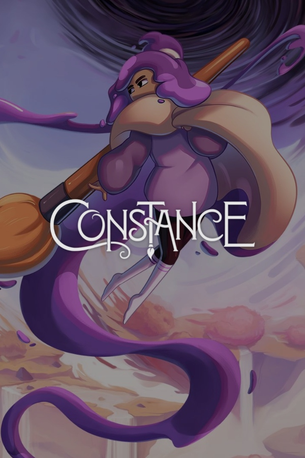

Constance
Every archived year-end list appearance, including placement and points earned.
About the Game
In Constance, dive into an immersive adventure set in a dark and eerie mansion, where every room holds mysteries and secrets. You play as a character determined to uncover the truth behind this haunted place.The gameplay focuses on solving a variety of complex puzzles, requiring keen observation, critical thinking, and meticulous exploration of your surroundings. Every clue you find brings you closer to the truth. Time is your ally.Explore, discover, and manipulate objects to progress through the story. The mansion is filled with hidden rooms and secret passages, where danger and the unknown lurk around every corner. As you advance, an oppressive atmosphere and growing suspense will keep you on edge.Will you uncover the secret of Constance?
| Released | 2024-12-14 |
|---|---|
| Developer | cr0cQ |
| Publisher | HGN_cr0cQ_Games |
| Genres | Indie |
| Platforms | PC |
SingleplayerSteam AchievementsFirst-PersonHorrorMystery3DRealistic3D VisionFamily SharingHidden ObjectTime ManipulationLogic
Where to Buy
Game information provided by RAWG.
Points by Year
List History
| Year | Source | List | Placement | Points |
|---|---|---|---|---|
| 2025 | WayTooManyGames | Top 20 Best Games of 2025 | 4 | 5 |